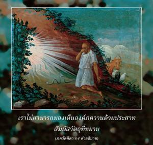
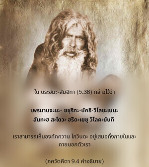
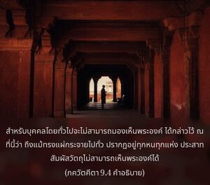
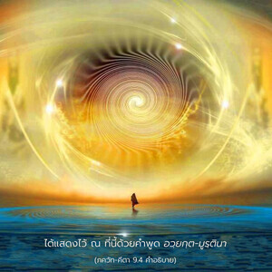
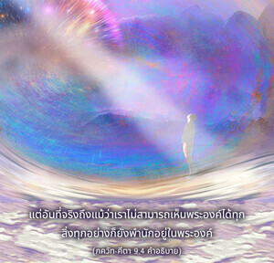
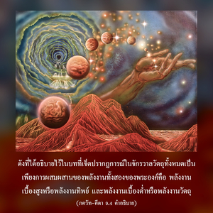

ตัวข้าในรูปลักษณ์ที่ไม่ปรากฏทำให้จักรวาลทั้งหมดนี้แผ่กระจายออกไป สิ่งมีชีวิตทั้งหมดอยู่ในข้า แต่ข้าไม่ได้อยู่ในพวกเขา






เราไม่สามารถมองเห็นองค์ภควานฺด้วยประสาทสัมผัสวัตถุที่หยาบ ได้มีการกล่าวไว้ว่า
อตห์ ศฺรี-กฺฤษฺณ-นามาทิ
น ภเวทฺ คฺราหฺยมฺ อินฺทฺริไยห์
เสโวนฺมุเข หิ ชิหฺวาเทา
สฺวยมฺ เอว สฺผุรตฺยฺ อทห์
(Bhakti-rasāmṛta-sindhu 1.2.234)
ประสาทสัมผัสวัตถุของเรานั้นไม่สามารถเข้าใจพระนาม ชื่อเสียง ลีลา และอื่นๆ ขององค์ศฺรีกฺฤษฺณได้ ผู้ที่ปฏิบัติการอุทิศตนเสียสละรับใช้อย่างบริสุทธิ์ภายใต้การแนะนำที่ถูกต้องเท่านั้นที่พระองค์จะทรงเปิดเผย ในพฺรหฺม-สํหิตา(5.38) ได้กล่าวไว้ว่า เปฺรมาญฺชน-จฺฉุริต-ภกฺติ-วิโลจเนน สนฺตห์ สไทว หฺฤทเยษุ วิโลกยนฺติ เราสามารถเห็นองค์ภควานฺ โควินฺท อยู่เสมอทั้งภายใน และภายนอกตัวเรา หากเราพัฒนาท่าทีแห่งความรักทิพย์ต่อพระองค์ ดังนั้น สำหรับบุคคลโดยทั่วไปจะไม่สามารถมองเห็นพระองค์ ได้กล่าวไว้ ณ ที่นี้ว่าถึงแม้ทรงแผ่กระจายไปทั่ว ปรากฏอยู่ทุกหนทุกแห่ง ประสาทสัมผัสวัตถุไม่สามารถเห็นพระองค์ได้ ได้แสดงไว้ ณ ที่นี้ด้วยคำพูดอวฺยกฺต-มูรฺตินา แต่อันที่จริงถึงแม้ว่าเราไม่สามารถเห็นพระองค์ได้ทุกสิ่งทุกอย่างก็ยังพำนักอยู่ในพระองค์ ดังที่ได้อธิบายไว้ในบทที่เจ็ดปรากฏการณ์ในจักรวาลวัตถุทั้งหมดเป็นเพียงการผสมผสานของพลังงานทั้งสองของพระองค์ คือ พลังงานเบื้องสูงหรือพลังงานทิพย์ และพลังงานเบื้องต่ำหรือพลังงานวัตถุ ดังเช่นแสงอาทิตย์แผ่กระจายไปทั่วจักรวาล พลังงานขององค์ภควานฺทรงแผ่กระจายไปทั่วทั้งการสร้าง และทุกสิ่งทุกอย่างพำนักอยู่ในพลังงานนั้น
ถึงกระนั้น เราไม่ควรสรุปว่าเนื่องจากทรงแผ่กระจายไปทั่วพระองค์จึงทรงสูญเสียความเป็นอยู่ส่วนพระองค์ เพื่อลบล้างข้อถกเถียงนี้องค์ภควานฺตรัสว่า “ข้าอยู่ทุกหนทุกแห่งและทุกสิ่งทุกอย่างอยู่ในข้า แต่ข้าก็ยังปลีกตัวออกห่าง” ตัวอย่างเช่น พระเจ้าแผ่นดินทรงเป็นผู้นำรัฐบาล รัฐบาลเป็นเพียงปรากฏการณ์แห่งพลังงานของพระเจ้าแผ่นดิน กระทรวงต่างๆ ของรัฐบาลเป็นพลังงานของพระเจ้าแผ่นดิน แต่ละกระทรวงอิงอยู่กับอำนาจของพระเจ้าแผ่นดิน แต่เราก็ไม่คาดหวังว่าพระเจ้าแผ่นดินจะทรงปรากฏอยู่ที่ทุกๆ กระทรวงด้วยพระองค์เอง นี่คือตัวอย่างที่เห็นเป็นรูปธรรม ในทำนองเดียวกัน ปรากฏการณ์ทั้งหลายที่เราเห็น และทุกสิ่งทุกอย่างที่มีอยู่ทั้งในโลกวัตถุนี้ และในโลกทิพย์พำนักอยู่บนพลังงานของบุคลิกภาพสูงสุดแห่งพระเจ้า การสร้างเกิดขึ้นด้วยการแพร่กระจายพลังงานต่างๆ ของพระองค์ดังที่ ภควัท-คีตา ได้กล่าวไว้ วิษฺฏภฺยาหมฺ อิทํ กฺฤตฺสฺนมฺ พระองค์ทรงปรากฏอยู่ทุกหนทุกแห่งด้วยตัวแทนส่วนพระองค์ นั่นคือพลังงานต่างๆ ของพระองค์ที่แพร่กระจายไปทั่ว